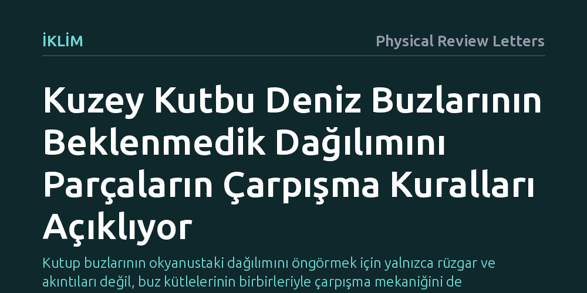

IKLIM · Physical Review Letters · 2026-09-12
Araştırmacılar, Kuzey Kutbu deniz buzlarının çalkantılı rüzgarlarla nasıl dağıldığını anlamak için buz kütlelerini tanecikli parçacıklar olarak modelledi. Simülasyonlar, buzların gözlemlenen sıradışı taşınma ve yayılma davranışlarının, parçaların birbirleriyle çarpışma kurallarıyla doğrudan açıklanabildiğini ortaya koydu.
Kutup buzlarının okyanustaki dağılımını öngörmek için yalnızca rüzgar ve akıntıları değil, buz kütlelerinin birbirleriyle çarpışma mekaniğini de hesaba katmanın şart olduğunu gösteriyor.

Kuzey Kutbu'nu kaplayan deniz buzları durağan bir kütle değildir; rüzgarların, okyanus akıntılarının ve dalgaların etkisi altında sürekli hareket eder, parçalanır ve sürüklenir. Bu hareket, sadece kutup bölgesinin buz örtüsünü değiştirmekle kalmaz, aynı zamanda küresel iklim sisteminin enerji dengesini ve deniz suyu sirkülasyonunu da doğrudan etkiler. Ancak araştırmacılar uzun süredir deniz buzlarının dağılma ve taşınma istatistiklerinde klasik akışkan modelleriyle açıklanamayan tuhaflıklar gözlemliyordu.
Gözlemler, buz parçalarının sürüklenirken standart yayılma yasalarına uymadığını; yani bir noktadan bırakılan boya damlası gibi düzenli dağılmak yerine, beklenmedik sapmalar ve sıçramalar sergilediğini gösteriyordu. Bu anormal dağılma davranışı, kutuptaki buz hareketlerinin neden doğru tahmin edilemediğinin de temel sebeplerinden biriydi. Buzun okyanus üzerindeki bu karmaşık tepkisini neyin yönlendirdiğini anlamak, iklim simülasyonlarındaki en büyük belirsizliklerden birini gidermek açısından kritik bir önem taşıyordu.
Fizikçiler bu bilmeceyi çözmek için geleneksel yaklaşımların dışına çıkarak deniz buzunu yekpare bir örtü ya da basit bir sıvı tabakası gibi ele almaktan vazgeçti. Bunun yerine, buz kütlelerini kum taneleri ya da bilyeler gibi birbiriyle temas eden ve çarpışan tanecikli bir malzeme yapısı olarak kurguladılar. Bu yaklaşım, deniz buzunun parçalı yapısını ve kütleler arasındaki mekanik etkileşimleri doğrudan hesaba katmayı mümkün kıldı.
Araştırma ekibi, sahada kaydedilmiş doğrudan yerel çevre ölçümlerini ve buz özelliklerini temel alarak kapsamlı bilgisayar simülasyonları geliştirdi. Kurgulanan modelde buz parçacıkları topluluğu, gerçek atmosferdeki gibi rastlantısal ve çalkantılı rüzgar kuvvetlerine maruz bırakıldı. Böylece rüzgarın yarattığı rastgele itiş gücü ile buz parçalarının birbirine çarpması arasındaki dinamik ilişki adım adım takip edildi.
Simülasyon sonuçları, deniz buzunun sergilediği alışılmadık dağılma istatistiklerinin arkasındaki temel itici gücü net biçimde ortaya koydu. Buz parçalarının rüzgar altında sürüklenirken birbirleriyle yaptıkları çarpışmalar, hareketin tekil bir parçanın sürüklenmesinden tamamen farklı bir toplu davranışa dönüşmesine yol açıyordu. Gözlemlenen istatistiksel sapmalar, harici bir karmaşık akıntı yapısından değil, doğrudan buz parçacıklarının birbirine çarpma kurallarından kaynaklanıyordu.
Yazarlar, karmaşık görünen bu dağılma davranışının yalnızca yerel çevre ölçümleri ve temel çarpışma fiziği kullanılarak başarıyla modellenebileceğini gösterdi. Buz parçaları çarpıştıkça hareket enerjisi parçacıklar arasında yeniden dağılıyor, bu da kütlelerin bazen kümelenmesine bazen de beklenmedik mesafelere fırlamasına yol açarak klasik modellerin yakalayamadığı istatistiksel dağılımı üretiyordu.
Elde edilen bulgular, deniz buzlarının kutup okyanuslarındaki yolculuğunu anlamak için iklim modellerinde kullanılan temel kabullerin gözden geçirilmesi gerektiğini gösteriyor. Deniz buzunu sadece rüzgar ve okyanus akıntılarına pasif şekilde kapılan bir yüzey olarak görmek yerine, parçacık etkileşimlerinin belirlediği mekanik bir sistem olarak değerlendirmek gerekiyor. Bu yaklaşım, özellikle mevsimsel olarak parçalanan buz kütlelerinin gelecekteki dağılımını öngörmede yeni kapılar aralıyor.
Bununla birlikte, çalışmanın bilgisayar modellerine ve yerel verilere dayandığını unutmamak gerekir; gerçek kutup koşullarındaki erime, dalga kırılması ve büyük ölçekli okyanus akıntılarının bu çarpışma dinamikleriyle nasıl örtüştüğü henüz tam olarak test edilmiş değildir. Yine de bu mekanizma, kutup denizlerinin çalkantılı doğasında buzların nasıl sürüklendiğini anlamak için sağlam bir fiziksel zemin sunuyor.